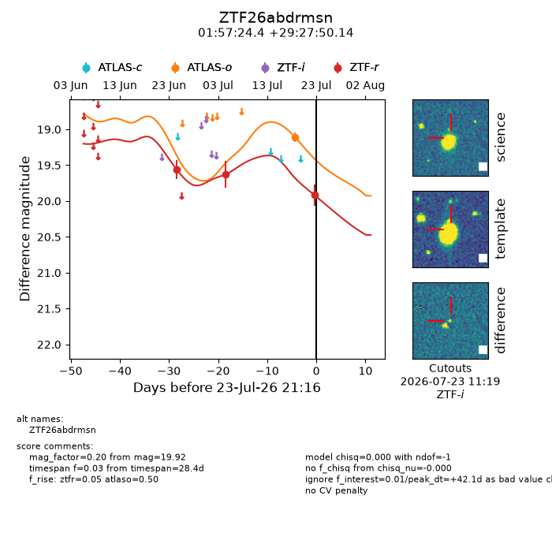
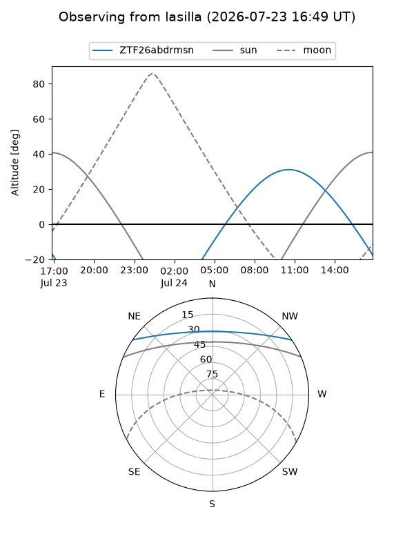
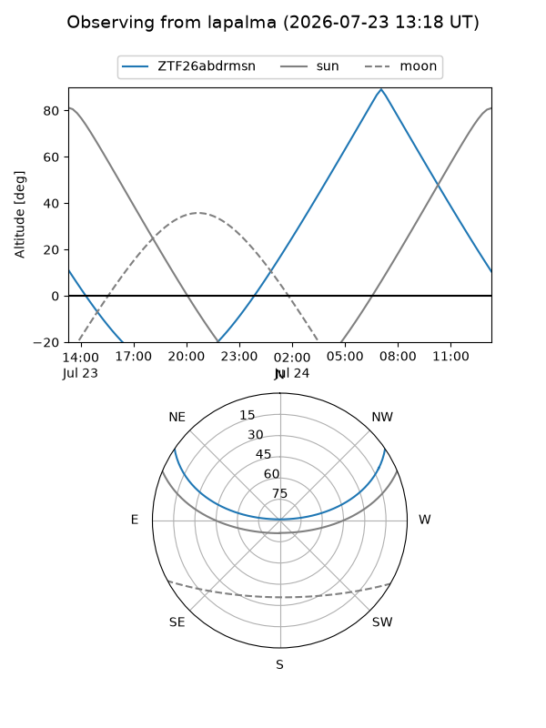
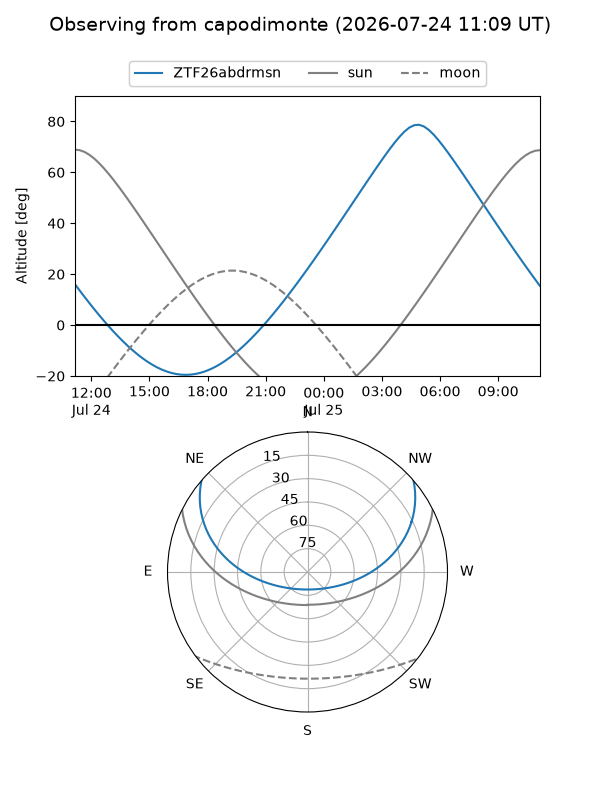
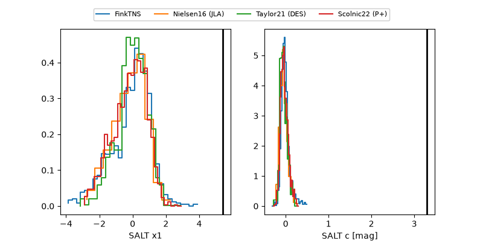

ZTF26abdrmsn
Target ZTF26abdrmsn at 2026-07-23 21:19
Aliases and brokers:
FINK-ZTF: ztf.fink-portal.org/ZTF26abdrmsn
Lasair-ZTF: lasair-ztf.lsst.ac.uk/objects/ZTF26abdrmsn
ALeRCE-ZTF: alerce.online/object/ZTF26abdrmsn
Direct TNS query: direct search
alt names
ZTF26abdrmsn (ztf,fink_ztf)
Coordinates:
equatorial (ra, dec) = 29.3515,+29.46393
equatorial (HMS+DMS) = 01:57:24.35,+29:27:50.14
galactic (l, b) = (139.7360,-31.24613)
Flags:
peak dt: +42.1
Photometry:
last atlaso=19.11, ztfr=19.92
1 atlaso, 3 ztfr detections
Lightcurve

Visibility



Additional plots
